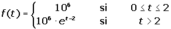
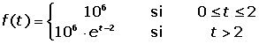
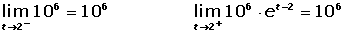
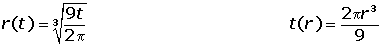
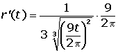
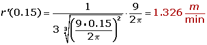

Ejercicios de aplicaciones físicas de la derivada
1La relación entre la distancia recorrida en metros por un móvil y el tiempo en segundos es e(t) = 6t2. Calcular:
1 la velocidad media entre t = 1 y t = 4.
2 La velocidad instantánea en t = 1.
2Debido a unas pésimas condiciones ambientales, una colonia de un millón de bacterias no comienza su reproducción hasta pasados dos meses. La función que representa la población de la colonia al variar el tiempo (expresado en meses) viene dada por:

Se pide:
1 Verificar que la población es función continua del tiempo.
2 Calcular la tasa de variación media de la población en los intervalos [0, 2] y [0, 4].
3 Calcular la tasa de variación instantánea en t = 4.
3Una población bacteriana tiene un crecimiento dado por la función p(t) = 5000 + 1000t² , siendo t el tiempo metido en horas. Se pide:
1 La velocidad media de crecimiento.
2 La velocidad instantánea de crecimiento.
3 La velocidad de crecimiento instantáneo para t 0 = 10 horas.
4La ecuación de un movimiento rectilíneo es: e(t) = t³ − 27t. ¿En qué momento la velocidad en nula? Hallar la aceleración en ese instante.
5La ecuación de un movimiento circular es: φ(t) = ½t². ¿Cuál es la velocidad y la aceleración angulares al cabo de siete segundos?
6Un observador se encuentra a 2000 m de lanzamiento de la torre de un cohete. Cuando éste despega verticalmente mide la variación del ángulo Φ(t) que forma la línea visual que le une con el cohete y la del suelo horizontal en función del tiempo transcurrido. Sabiendo que Φ'(t) = Π/3, se pide:
1 ¿Cuál es la altura del cohete cuando Φ = Π/3 radianes?
2 ¿Cuál es la velocidad del cohete cuando Φ = Π/3 radianes?
7Se bombea gas a un globo esférico a razón de 6m3/min. Si la presión se mantiene constante. ¿Cuál es la velocidad con la que cambia el radio del globo cuando el diámetro mide 120 cm?
8¿Cuál es la velocidad que lleva un vehículo se mueve según la ecuación e(t) = 2 − 3t2 en el quinto segundo de su recorrido? El espacio se mide en metros y el tiempo en segundos.
- 1
- 2
- 3
- 4
- 5
- 6
- 7
- 8
Ejercicio 1 resuelto
La relación entre la distancia recorrida en metros por un móvil y el tiempo en segundos es e(t) = 6t2. Calcular:
1 la velocidad media entre t = 1 y t = 4.
2 La velocidad instantánea en t = 1.
Ejercicio 2 resuelto
Debido a unas pésimas condiciones ambientales, una colonia de un millón de bacterias no comienza su reproducción hasta pasados dos meses. La función que representa la población de la colonia al variar el tiempo (expresado en meses) viene dada por:
Se pide:
1 Verificar que la población es función continua del tiempo.



2 Calcular la tasa de variación media de la población en los intervalos [0, 2] y [0, 4].


3 Calcular la tasa de variación instantánea en t = 4.

Ejercicio 3 resuelto
Una población bacteriana tiene un crecimiento dado por la función p(t) = 5000 + 1000t² , siendo t el tiempo metido en horas. Se pide:
1 La velocidad media de crecimiento.


2 La velocidad instantánea de crecimiento.

3 La velocidad de crecimiento instantáneo para t 0 = 10 horas.

Ejercicio 4 resuelto
La ecuación de un movimiento circular es: φ(t) = ½t². ¿Cuál es la velocidad y la aceleración angulares al cabo de siete segundos?
ω(t)= φ′(t)= t ω = 7
α(t)= φ′′ (t)= 1 α = 1
Ejercicio 5 resuelto
La ecuación de un movimiento circular es: φ(t) = ½t². ¿Cuál es la velocidad y la aceleración angulares al cabo de siete segundos?
ω(t)= φ′(t)= t ω = 7
α(t)= φ′′ (t)= 1 α = 1
Ejercicio 6 resuelto
Un observador se encuentra a 2000 m de lanzamiento de la torre de un cohete. Cuando éste despega verticalmente mide la variación del ángulo Φ(t) que forma la línea visual que le une con el cohete y la del suelo horizontal en función del tiempo transcurrido. Sabiendo que Φ'(t) = Π/3, se pide:
1 ¿Cuál es la altura del cohete cuando Φ = Π/3 radianes?


2 ¿Cuál es la velocidad del cohete cuando Φ = Π/3 radianes?


Ejercicio 7 resuelto
Se bombea gas a un globo esférico a razón de 6m3/min. Si la presión se mantiene constante. ¿Cuál es la velocidad con la que cambia el radio del globo cuando el diámetro mide 120 cm?





Ejercicio 8 resuelto
¿Cuál es la velocidad que lleva un vehículo se mueve según la ecuación e(t) = 2 − 3t2 en el quinto segundo de su recorrido? El espacio se mide en metros y el tiempo en segundos.


 Ejercicios
Ejercicios